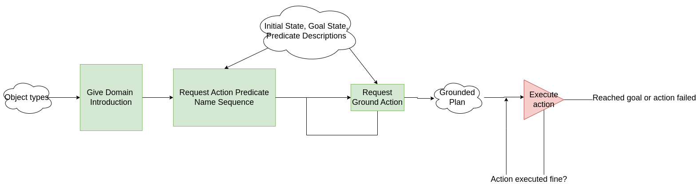
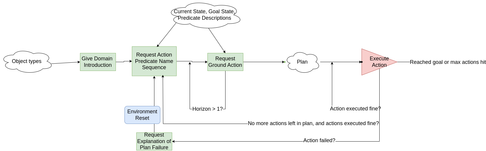
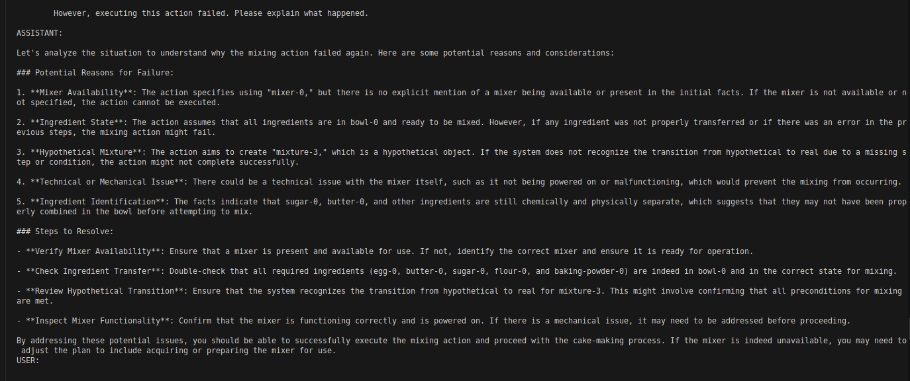

| A Study on Planning with Large Language Models in Relational Domains | |||
| Annie Feng | |||
| Final project for 6.7960 Fall 2024, MIT | |||
| A Study on Planning with Large Language Models in Relational Domains | |||
| Annie Feng | |||
| Final project for 6.7960 Fall 2024, MIT | |||
Large Language Models (LLMs) have recently emerged as powerful tools for decision-making and are increasingly being integrated into planning systems. Planning is a fundamental component of the decision-making process in LLM-based agents [3]. Traditionally, planning has been dominated by symbolic methods, such as the widely used FastDownward planning system [1], which operate on problems defined in the Planning Domain Definition Language (PDDL). These automated planners rely on formally defined domain and problem specifications, typically crafted by domain experts, to produce sound and complete plans.
In contrast, LLMs offer a more flexible alternative by enabling planning from natural language descriptions without requiring predefined domain models. However, this flexibility comes at the cost of reliability, as LLMs lack the guarantees of soundness and completeness inherent to symbolic planners. Recent studies have highlighted the limitations of LLMs in planning tasks, finding that symbolic planners generally outperform LLMs under the strict conditions for which symbolic methods are well-suited [8], [7], [4]. Nonetheless, these critiques also suggest that LLMs may excel in planning under alternative conditions that leverage their strengths.
In this work, we explore the potential of LLMs to plan effectively in relational, symbolic domains when certain overlooked conditions are met. We propose and evaluate an agentic workflow that enables LLM-based planning in relational domains. Unlike prior work, which has primarily focused on zero-shot or one-shot planning open-loop with LLMs—often with poor results in relational settings [8]—our approach adopts a closed-loop paradigm. Specifically, we leverage the LLM not only as a planner but also as an interpreter of execution errors, enabling iterative refinement of plans. While recent studies have investigated closed-loop planning with LLMs with error explanations[5], [2], [9], these efforts have not addressed the relational domain context that is central to our approach. We propose an agentic workflow for planning in relational domains. This workflow processes inputs through a pipeline of prompt templates to generate actions, which are subsequently executed. In relational domains, actions and states are represented as relations over objects, expressed as predicates (see the sidenote for more details). To integrate LLMs effectively, we label these predicates with natural language descriptions and construct prompts using these descriptions and the prompt templates.
Our approach differs from the method presented in [8], which operates under a similar relational domain setting. To address the limitations observed in their work, we hypothesize that the suboptimal performance of LLMs in their experiments arises from inappropriate use of the models. Specifically, we propose two key hypotheses:
Our setting is relational, which means that states and actions are expressed as ground literals, or predicates applied to observed objects in the state (such as pan-0 or egg-1). Predicates are Boolean-valued functions. A predicate applied to objects or variables is a ground literal or lifted literal, respectively. Each action is a ground literal constructed from a predicate. Each predicate has a semantically meaningful name, such as "is-raw-egg-yolk" (a state predicate) or "put-pan-in-oven" (an action predicate).
We present our prompt template pipelines (agentic workflows) for planning in the Baking-Large domain. For reference, the predicate descriptions used in these workflows are provided in the Appendix.
The open-loop workflow consists of three main prompting stages, as illustrated in Figure 4. Green boxes represent prompt templates, white boxes denote data, and red indicates interactions with the simulated environment.
Figure 1: Open-Loop Agentic Workflow.
The closed-loop workflow builds on the open-loop process by adding steps for failure diagnosis and replanning, as depicted in Figure 2. This approach allows the agent to iteratively refine its plan based on feedback from the environment.
Figure 2: Closed-Loop Agentic Workflow.
In the closed-loop workflow, we introduce the concept of planning at different horizons. For a specified horizon H, the agent grounds up to H actions at a time and executes this partial plan. The process continues until the goal is achieved, a failure occurs, or the agent reaches the action limit (set to 50 actions). The key steps are as follows:
The prompting stages for closed-loop planning include:
In the following sections, we detail the specific prompts and prompt templates used for each stage in both workflows.
At the beginning, we prompt twice, appending GPT4o's responses to our conversation each time. Here is the first prompt:
You are a household robot in a kitchen. You are in front of the kitchen counter, where there are some prepared ingredients. More specifically, you will be given a set of facts that are currently true in the world, and a set of facts that is your goal to make true in the world. With my step-by-step guidance, you will think through how to act to achieve the goal.
Here is the second prompt:
In the kitchen, there different kinds of objects that you can interact with. The different kind of objects that you see are categorized into the following: container measuring cup dessert powder butter mixture egg oven spatula electric stand mixer Right now, you see the some of these ingredients and items on the counter. You also see some appliances in the kitchen. To start making a mixture for a souffle, you need to mix together egg yolk, sugar, butter, and a little bit of flour. To make a mixture for a cake, you need to mix together a whole egg, sugar, butter, more flour, and baking powder.
We first prompt with the starting state using this template:
f"""
The following things are true at this moment:
{starting_state_predicate_fstrings}
As a reminder, in the kitchen, the pans, measuring cups, and bowls are on the counter, and the oven(s) is (are) behind the counter. If you are baking desserts, please rationalize what are the essential ingredients and their amounts to make those desserts and use only those. Once an ingredient is used once, it can't be reused.
You should have all of the ingredients that you need on the counter prepared for you. I'll let you know what desserts you will make shortly.
"""
Then, we prompt with the goal state and the defined set of actions for the robot:
f"""These are the things that you would like to become true:
{goal_state_predicate_fstrings}
This state is your goal.
These are the names of the atomic actions that we can perform, along with their descriptions:
{action_description_string}
Can you please give a sequence of these phrases that will get us to the goal? Include the exact phrase in each step of your answer. Format it using a numbered list with one line per step, starting with "1.". Give a little explanation of each step underneath each bullet point. Mark the end of the plan with '***' in your response. Please avoid any past planning mistakes.
"""
For the first action we ground, we prompt using this template:
f"""Thanks. Let's think step by step what objects are associated with each of these actions.
Let's recap what we've talked about. Currently, the following facts are true:
{starting_state_predicate_fstrings}
We want to make these facts true:
{goal_state_predicate_fstrings}
We're thinking through a plan step-by-step to our goal.
We are about to do the next step in the plan:
{instruction}
""" + \
"""We need to identify the names of the specific objects involved in this action. Here are more details about how the objects involved need to relate to the action.
""" + '\n'.join(variable_description_list)
For the following actions in the action sequence from the LLM that we ground, we use only the second half of the above template (starting from "We are about to do the next step in the plan:").
To ground each variable in the action predicate referenced by the name in the action sequence from the LLM, we use this prompt template:
f"""We are going to {action_description_with_nonspecific_articles[:-1].lower()}. Given knowledge of the current state and our planned actions, which of the following objects fits the description, {variable_description}?
""" + '\n'.join([o._str.split(':')[0] for o in objects_list]) + '\n' + 'Please explain your answer, and then answer with the object name on the last line after "Answer:".'
We first prompt with this prompt template to request an explanation about the plan failure:
f"""Based on your plan, we've just executed these actions:""" + executed_plan_string + \
f"""However, the last action failed to execute properly. Before we executed the last action, the following facts were true in the environment:
{state_description}
Then, we tried executing this action:
{last_action_description}
However, executing this action failed. Please explain what happened.
"""
Then, we request the LLM to replan:
f"""
Ok, thanks for the explanation. Now, let's replan to the goal from the beginning and avoid this mistake and all previous mistakes.
Currently, these facts are true:
{initial_state_description}
We want these things to be true:
{goal_state_description}
These are the names of the atomic actions that we can perform, along with their descriptions:
{self.action_description_string}
Can you please give a sequence of these phrases that will get us to the goal? Include the exact phrase in each step of your answer. Format it using a numbered list with one line per step, starting with "1.". Give a little explanation of each step underneath each bullet point. Mark the end of the plan with '***' in your response. Please avoid all past planning mistakes.
"""

Figure 3: An example failure explanation. GPT4o's response about an execution failure.
We used PDDLGym [6] to simulate relational domains and evaluated the open-loop and closed-loop workflows on four planning problems:
| Method | Problem 1 | Problem 2 | Problem 3 | Problem 4 |
|---|---|---|---|---|
| Open-loop | 4/5 (80%) | 3/5 (60%) | 1/5 (20%) | 0/5 (0%) |
| Closed-loop with horizon 5 | 3/5 (60%) | 5/5 (100%) | 4/5 (80%) | 2/5 (40%) |
| Closed-loop with horizon 1 | 4/5 (80%) | 5/5 (100%) | 5/5 (100%) | 5/5 (100%) |
The results support our initial hypotheses:
In summary, the combination of a more intuitive domain and a closed-loop, short-horizon planning approach significantly enhances LLM performance in relational planning tasks.
This work introduces an agentic workflow for planning in relational domains using LLMs, demonstrating that closed-loop planning with iterative feedback and explanations is significantly more effective than open-loop planning or long-horizon approaches. Additionally, our findings confirm that LLM performance is domain-dependent, underscoring the need for further investigation into the characteristics that make certain domains more suitable for LLM-based planning. Another limitation is that the prompt templates in this project were hand-optimized. For future work, these should be systematically created or optimized over.
A promising application of this approach lies in leveraging LLMs to collect relational demonstrations for learning symbolic domains during training. This could be performed in a controlled setting with safeguards to ensure reliability. The learned symbolic domains could then be used with traditional symbolic planners during deployment, where performance guarantees are critical. Such a framework is particularly relevant for robotics, where symbolic representations provide compact, generalizable models of actions across similar objects. For instance, an action like stack(a, b) learned during training with blocks A and B could generalize to new objects, such as blocks C and D, during deployment.
Future work could explore refining this hybrid approach, combining LLMs for learning and symbolic planners for execution, to enhance efficiency and reliability in real-world applications. Furthermore, characterizing the specific attributes of domains that optimize LLM performance and automatically creating and optimizing prompts remain critical areas for further research.
The predicate descriptions referenced in the prompt templates are listed here.
The section under "predicates" is the mapping of each predicate name to its corresponding natural language description. Brackets indicate placeholders for the object names that serve as arguments for the ground literal of the predicate.
The section under "lifted_skill_descriptions" is the mapping of each action predicate name to its corresponding description.
We provide hand-written descriptions of each variable in the lifted action literal in Baking-Large. The section under "skill_variable_descriptions" is a map from the action name to a list of descriptions for each of the variables.
We provide hand-written natural language descriptions for goals. The section under "train_goals" is the mapping of each training problem to its corresponding goal description.